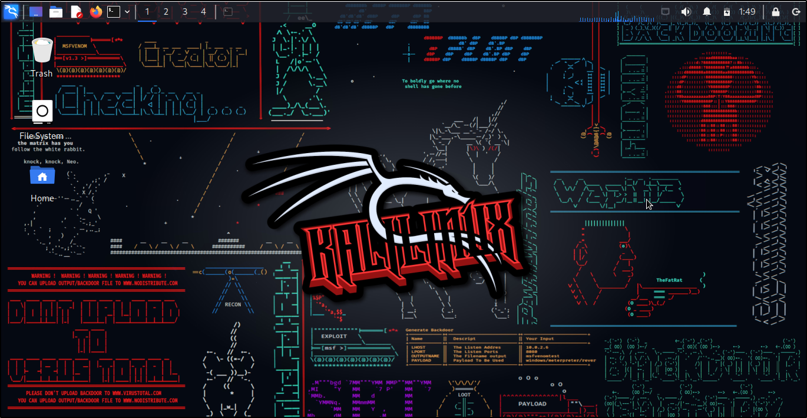
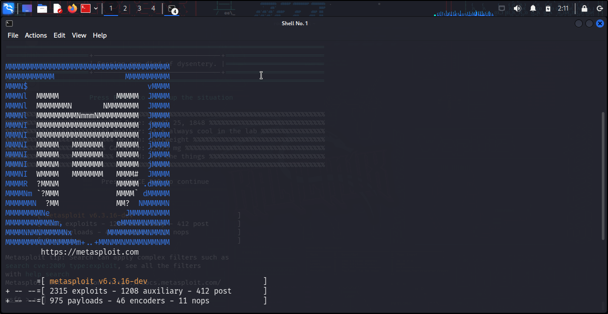
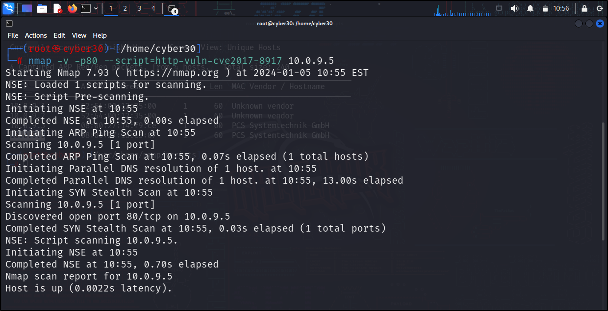

SET UP HACKING LAB

Kali Linux is the most widely used ethical hacking OS. It is a Debian-based Linux - based operating system developed for penetration testing and digital forensics. It is financed and maintained by Offensive Security Ltd.
METASPLOIT BASICS

Metasploit is an open-source penetration testing framework that helps security professionals and hackers identify and exploit vulnerabilities in computer systems. It provides a comprehensive set of tools for penetration testing, ethical..
VULNERABILITY SCANNING

Vulnerability scanning is the process of discovering and identifying vulnerabilities in a network by using Vulnerability Scanners (OpenVAS, Nessus, Nmap, Metasploit) and scripts.
LINUX BASICS AND SCRIPTING

Linux is an open-source, Unix-like operating system kernel first released by Linus Torvalds in 1991 at the University of Helsinki.It is the core component of many different Linux..